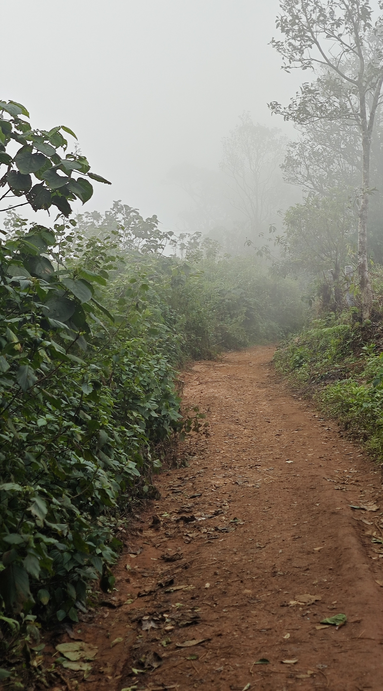
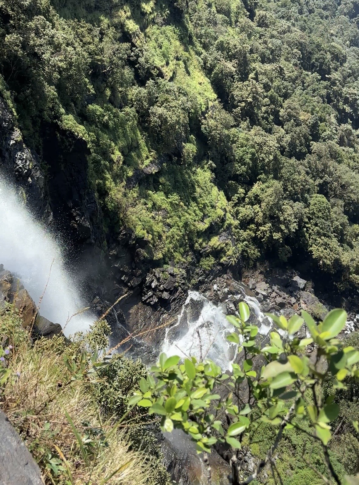
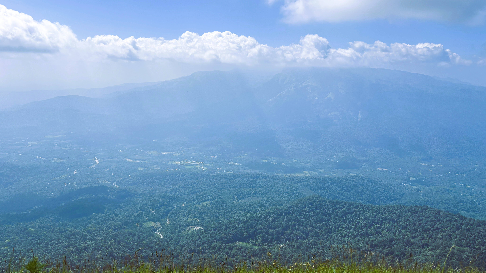

The Trail That Goes
Backwards
Bandaje keeps pulling me back. I don't fully understand why — except that I do, completely. There is something about this trail that doesn't let you go. Not the waterfall alone, though the waterfall is extraordinary. It's the way the whole thing unfolds. Backwards. Wrong way round. Better for it.
Most treks make sense. You go up, you reach something, you come down. Bandaje doesn't do that. It descends first, opens up into something vast and green, hands you a waterfall from the top — lets you stand where the water begins — and only then makes you earn the return. By the time you're climbing back out, you've already seen everything. The suffering has a different quality when you know what it was for.
The trail starts at Sunkasale, a small village in Mudigere Taluk, Chikkamagaluru. Start early. The forest is different before the heat arrives — cooler, quieter, more itself.


The trail starts in deep forest. The canopy meets overhead and you walk inside the green. Then the boulders arrive — smooth stones that the water uses as a path. You step on them and the water moves under your feet, around your ankles, through the gaps between rocks. Plants grow out of the boulder faces. The air is cold and smells like something alive and wet and very old.
You don't cross water here. You walk with it. Every step forward, the water finds the next hollow and follows.
Then the forest opens slightly and lets in sun. Not much — just rays. They come through the canopy at angles and land on the trail in moving patches. Walk into one. The forest does that — makes you feel, briefly, like the only person in it. Like the main character. The forest cast you.
Then the shola grasslands. In the Western Ghats, shola grasslands are a specific thing — not just open ground. They hold water even through the driest part of summer. The grass yellows and looks finished. It isn't. The moment the monsoon arrives, it comes back exactly as it was. Same green, same fullness. This is not a meadow. It is a memory of rain stored in the roots of grass.
The first view from the grasslands is the kind of thing you don't have words for yet when you see it. Green mountains rising toward the sky, the sky sitting on top of them like it belongs there. And in the gap between clouds — if you're lucky, if the mist lifts — the mountains and the sky become one thing. I called it a runway through heaven. I still don't have a better name for it.

Bandaje is almost always covered in cloud or mist. Most trekkers who've done this trail have done it in white — a few metres of visibility, the mountains hidden somewhere behind. I was lucky. I got this. It felt like the trail chose to show me something.
I lost my heart to this place right here, in the grassland, before I'd even reached the waterfall. The mountain to the left looked like a black cake with green icing pressed onto the top. That's the image. I can't improve on it. I could have stayed there looking at those mountains forever — and I don't say that lightly.
Wild bison have been spotted in these grasslands — enormous creatures, sometimes only visible as shapes when the mist drops around them. Keep your distance. They are powerful in ways that can't be measured. Give them the trail. They live here; you are visiting.
The trail rounds the mountain in a semi-circle, then enters a second mountain. Before you do — look back. The view behind you is worth one long stop. That cake-black mountain with the green top. The sky against it. Stay there a moment. You will want this later.
The last section before the waterfall is coloured. Seriously coloured. The boulders here carry orange and silver and gold and black and something close to blue — iron ore, mineral-rich rock from a region that stores centuries in its geology. They shine. Each stone has its own light. This is not what you expect from a mountain trail. Walk slowly here. Don't rush past it.


Most waterfalls you see from the bottom. You stand at the base and look up at the white and the roar. Bandaje is different. You stand at the top. The rock here is jet black — basalt polished over centuries by moving water, smooth as anything made by human hands but harder and older. You cannot place a stone on it and expect it to stay. Nothing stays here. The water decides.
The fall opens below you. A thousand feet down, the green forest waits at the bottom. You can hear the sound — the kind that doesn't compete with thought, it replaces it. Sit at the edge for a while. Let it. That is the peace you came for. It is real, and it is here, and it fills you in a way you can't arrange for yourself anywhere else.
Then you have to go back. This is the part Bandaje holds back until you're committed. The return ascent is 55 degrees for roughly 700 metres. Rocks, boulders, sun. No shade. At the base of it, everyone says the same thing: I'm done. Then they climb it anyway. One step, then the next. Your water bottle is the only companion you need. Keep drinking. The top comes.
This is the hardest part of the trail — not technical, just relentless. The angle doesn't ease up. Pace yourself from the first step, not the tenth. Hydrate before you start the climb, not when you feel thirsty. The trail rewards patience here.
From the top, the route back takes a different line — through the fort. Ballarayana Durga, a hilltop fortification that was destroyed in the wars between Tipu Sultan and the local king. The walls are broken. The cannons are still there, arranged in the circular formation used for defence. Walk the perimeter. Think about who stood in this same wind and looked at the same mountains.
Inside the fort, there's a viewpoint. My favourite place to sit on this entire trail. From here you can see Rani Jhari — a mountain that looks, from this angle, like white marble shining in afternoon light. The name carries a story: when the enemy came to take the kingdom and capture the queen, she ran to the mountain and jumped from the top. The mountain carries her name now. That is what passes for peace sometimes — a place named after someone who chose the forest over captivity.

The descent from the fort runs through grassland first, then back into the forest. The sounds change as you drop — wind softens, birds get louder, small streams begin. By the time you reach the base camp, it's usually around 4 pm. The Rani Jhari viewpoint right at the trailhead is almost always in cloud by then. Almost always.
Bandaje is not about reaching a summit. It is about being handed something unexpected at the end of a long, strange, beautiful descent — and then finding out you had to earn the return all along. And still wanting to come back.